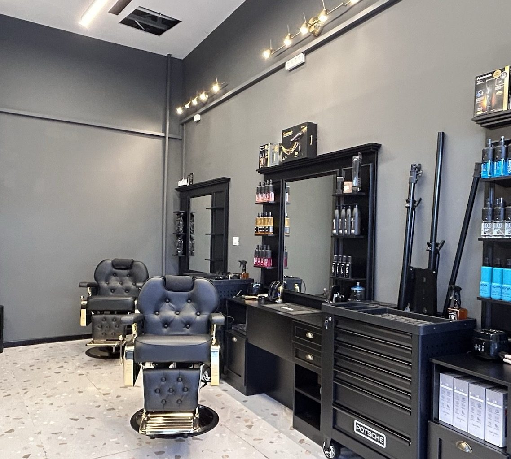
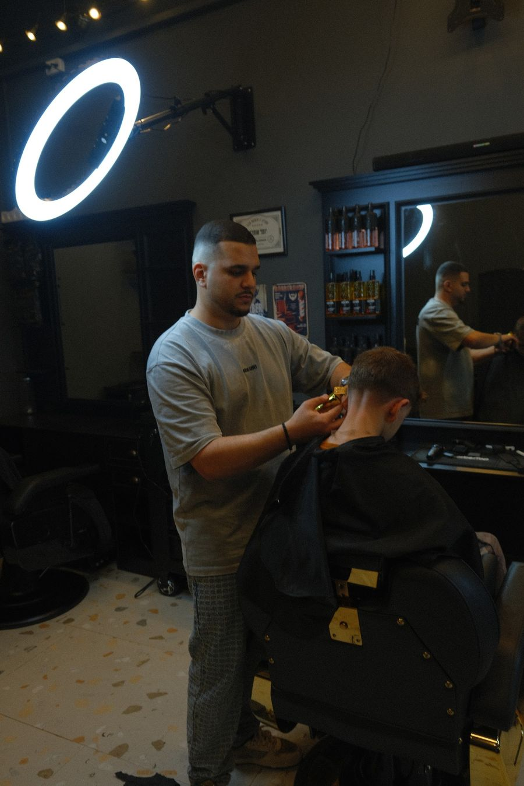
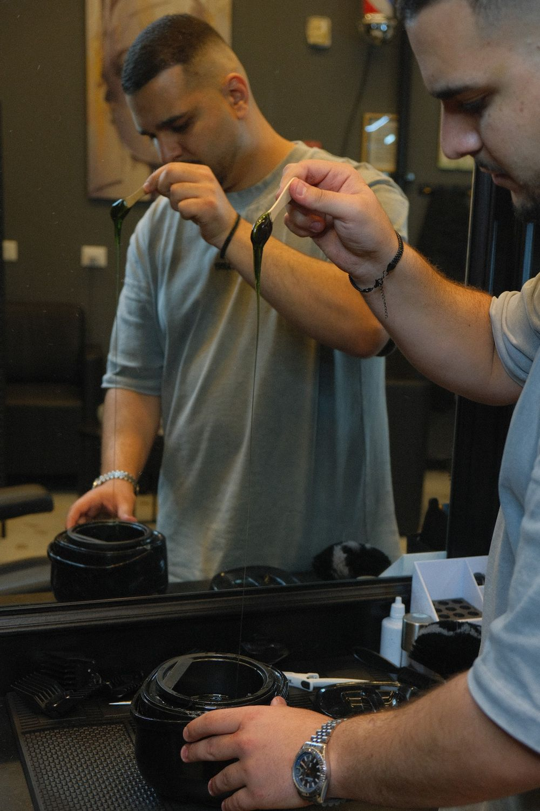
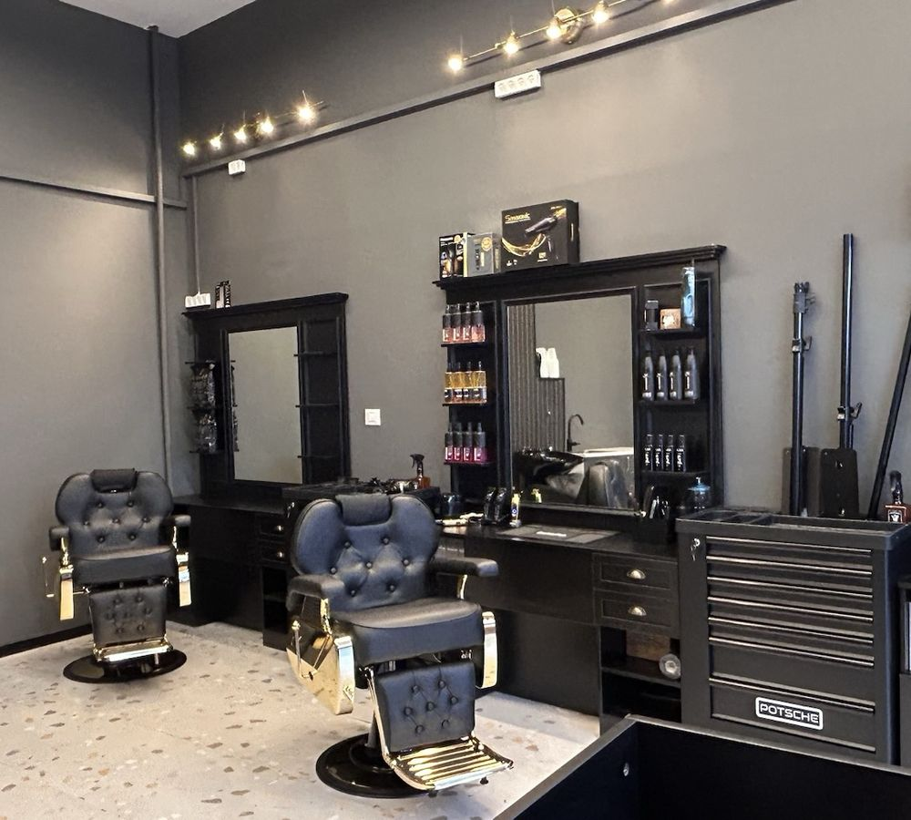
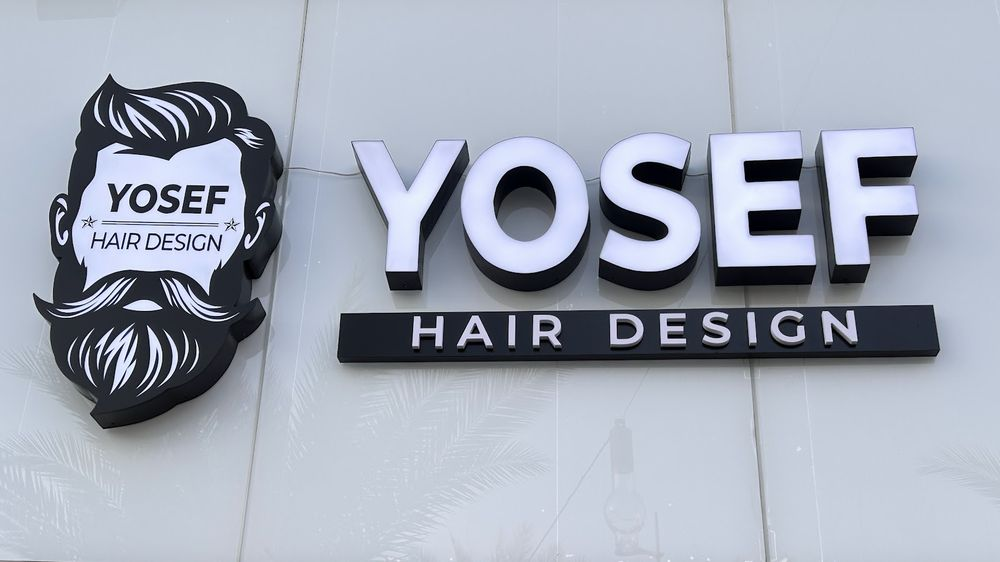
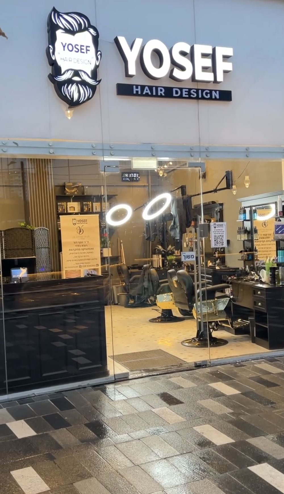

תספורת גבריםMen’s cuts
פייד, מספריים, וקו נקי בעורף.Fades, scissor work and a clean line at the neck.
״הקשיב לבקשות שלי ודייק בדיוק למה שרציתי.״
“listened to my requests and got exactly what I wanted.” (translated from Hebrew)
קונספט לדוגמה שנבנה עבור יוסף עיצוב שיער · זה אינו האתר הרשמי של העסקA sample concept built for Yosef Hair Design · This is not the business’s official website

מספרה בדוכיפת 3, קריית אתאA barbershop at 3 Duchifat St, Kiryat Ata
תספורות לגברים ולילדים, זקן ושעווה.Haircuts for men and boys, beards and wax.
52 ביקורות בגוגל52 Google reviewsהלוגו של יוסף, ובתוכו המספרה עצמה.Yosef’s own logo, with the shop inside it.

פייד, מספריים, וקו נקי בעורף.Fades, scissor work and a clean line at the neck.
״הקשיב לבקשות שלי ודייק בדיוק למה שרציתי.״
“listened to my requests and got exactly what I wanted.” (translated from Hebrew)
בכיסא הגדול, כמו של אבא.In the big chair, just like dad’s.
״לא רק שהצליח להרגיע אותו אלא גם סיפר אותו מושלם!!!״
“not only managed to calm him down but also gave him a perfect haircut!!!” (translated from Hebrew)
מכונה, מסרק, ואתם רואים כל קו.Clipper, comb, and you watch every line.
״מספרה שהיא אווירה״
“a barbershop that’s a whole atmosphere” (translated from Hebrew)

חוט ירוק, מקל עץ וקדרה שחורה.A green thread, a wooden stick and a black pot.
שני כיסאות, קיר אפור ואור חם.Two chairs, a grey wall and warm light.

מכונות זהב על המשטחGold clippers on the mat
מ-52 ביקורות בגוגלfrom 52 Google reviews״ותמיד גם יפנק בקפה טעים...״
“and he always treats you to a good coffee...” (translated from Hebrew)

גררו כדי לסובב.Drag to turn.

בוחרים, וההודעה נכתבת לבד.Choose, and the message writes itself.
חמש מהביקורות בגוגל, כלשונן.Five of the Google reviews, word for word.
מקצוען אמיתי, יש לי ילד סופר רגיש שזז כל הזמן, הוא לא רק שהצליח להרגיע אותו אלא גם סיפר אותו מושלם!!! ממליצה בחום
A true professional. I have a super-sensitive kid who moves all the time; he not only managed to calm him down but also gave him a perfect haircut!!! Warmly recommended (translated from Hebrew)
תודה רבה על תספורת טובה, אני מרוצה מהתוצאה. הספר היה מקצועי, הקשיב לבקשות שלי ודייק בדיוק למה שרציתי. האווירה במקום הייתה ניימה ונוחה, והשירות היה אדיב וסבלני. התספורת יצאה יפה, מחמיאה וקלה לסידור ביום יום.
Thanks a lot for a good haircut, I’m happy with the result. The barber was professional, listened to my requests and got exactly what I wanted. The place felt pleasant and comfortable, and the service was kind and patient. The cut came out nice, flattering and easy to style day to day. (translated from Hebrew)
יוסף זכיתי להיכנס וקיבלת אותי בזרועות פתוחות ! מספרה שהיא אווירה , בשישי הערק זורם והשירות אין מילים !
Yosef, I was lucky to come in and you welcomed me with open arms! A barbershop that’s a whole atmosphere, on Fridays the arak flows and the service is beyond words! (translated from Hebrew)
אלופים שם אחד אחד מאוד סבלניים וחמודים קיבלו אותנו ביפה למרות שהגענו ללא תור והוציאו את אחי כמו שביקש
Champions, every single one, very patient and sweet. They welcomed us nicely even though we came without an appointment, and my brother left exactly the way he asked. (translated from Hebrew)
אין על יוסף ! לא רק בזכות שמדובר בספר מקצועי ,עם מחירים מאוד נוחים ,אלה גם בזכות עומד בזמנים שנקבעו דרך האפליקציה, ותמיד גם יפנק בקפה טעים... הכרתי את יוסף לא מזמן ומהר מאוד הוא הפך להיות הספר הקבוע שלי
Nobody beats Yosef! Not only because he’s a professional barber with very reasonable prices, but also because he keeps to the times booked through the app, and he always treats you to a good coffee... I met Yosef not long ago and he very quickly became my regular barber. (translated from Hebrew)
מתוך התקנון של יוסף.From Yosef’s own booking rules.
כחמש דקות לפני השעה שנקבעה.About five minutes before your booked time.
לפי התקנון, איחור של יותר מעשר דקות מבטל את התור.By his rules, arriving more than ten minutes late cancels the slot.
ביטול בארבע השעות שלפני התור צריך אישור של יוסף.Cancelling within four hours of the slot needs Yosef’s approval.
בוואטסאפ או בטלפון, 054-762-7088.On WhatsApp or by phone, 054-762-7088.
שעות הפתיחה עוד לא מופיעות בגוגל. שאלו את יוסף בוואטסאפ מתי יש מקום.Opening hours aren’t listed on Google yet. Ask Yosef on WhatsApp when there’s a free chair.